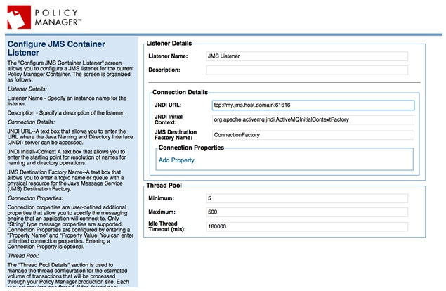
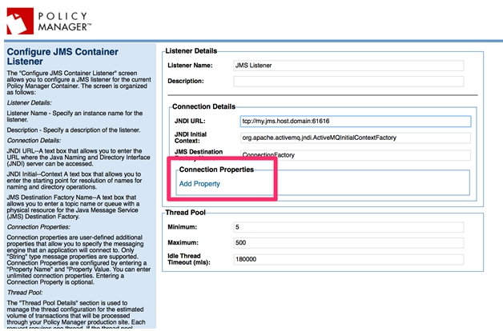
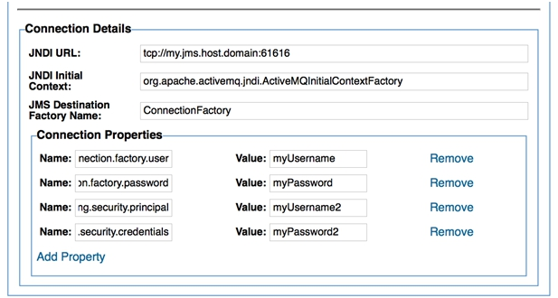

Learn how to configure JMS connection properties.
When adding or modifying a JMS connection to Policy Manager, three properties can be configured directly.

Additionally more properties can be configured by clicking the Add Property link in the connection details.

| Parameter | Description |
|---|---|
| destination | The URL parameter name used to identify the JMS destination (topic or queue) name. |
| connectionFactory | The URL parameter name used to specify the JMS factory name |
| jndiProviderURL | The URL parameter name used to define the JNDI provider URL. |
| initialContextFactory | The URL parameter name used to define the JNDI initial contextfactory class. |
| format | The URL parameter name used to identify the message type. Acceptable values are text or bytes. |
| temporaries | The URL parameter name used to allow or disallow the use of temporary destinations. The acceptable values are true or false. |
| replyto | The URL parameter name used to identify the replyTo destination. |
| Property | Description |
|---|---|
| jms.mode | Identifies the JMS mode. The value must be one of JMS_QUEUE_MODE or JMS_TOPIC_MODE. |
| jms.transactional | Indicates the JMS transport's transactional behavior. The value is boolean, indicating that the transport should use transaction (true) or should not (false). If not set, defaults to false. |
| jms.use.temporaries | Indicates whether the JMS transport should use temporary destinations in the JMSReplyTo property of outgoing messages. The value is boolean, with a value of true if temporaries should be used. |
| jms.message.type | Indicates the JMS message type to use. The value will be either JMS_MESSAGE_TYPE_BYTES or JMS_MESSAGE_TYPE_TEXT. |
| jms.read.timeout | The JMS read timeout. The value is the string value of the number of milliseconds. |
| jms.selector | The default message selector expression |
| java.naming.security.principal | The JNDI provider username used with the JMS transport. |
| java.naming.security.credentials | The JNDI provider credentials used with the JMS transport. |
| java.naming.security.authentication | The environment property for specifying the security level to use (constant). Its value is one of the following strings: none, simple, or strong. If this property is unspecified, the behavior is determined by the service provider. |
| jms.connection.factory.user | The JMS connection factory username. |
| jms.connection.factory.password | The JMS connection factory password. |
| jms.connection.factory.name | The JMS connection factory name. |
| jms.destination.name | The JMS destination name. |
| jms.replyto.name | The JMS replyTo destination name. |
| jms.durable.subscriber | The JMS durable subscriber name. |
| jms.persistent.delivery | Indicates whether or not to use PERSISTENT delivery mode. |
| jms.time.to.live | The JMS message time to live value. The value will be a string version of the number of milliseconds. |
| jms.priority | The JMS priority. |
| jms.retries | The JMS retry count. |
| jms.client.id | The JMS client ID for durable subscriptions. |
| jms.url | The JMS URL string. |
| jms.protocol | The JMS protocol. This is usually jms, but could be amqp or amqps. |
| amqp.virtual.host | The virtual host for AMQP/S. |
| amqp.port | The port for AMQP/S. |
